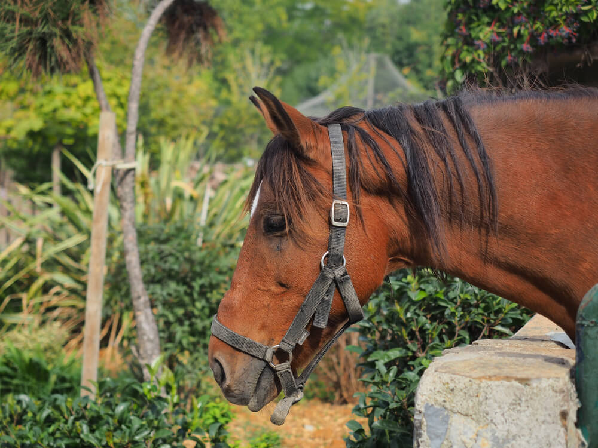

At (Equus ferus caballus), insanlık tarihinin en önemli evcil hayvanlarından biri olarak bilinir; güçlü yapısı, hız ve dayanıklılığı sayesinde binlerce yıldır ulaşımda, tarımda, savaşlarda ve kültürel yaşamda merkezi bir rol oynamıştır. Ortalama 25–30 yıl yaşayabilen atlar, otçul beslenerek çimen, saman ve tahıllarla yaşamlarını sürdürür; farklı iklim ve coğrafyalara uyum sağlayabilmeleri sayesinde dünyanın pek çok bölgesinde yetiştirilmişlerdir. Sosyal yapıları sürü düzenine dayanır, birbirleriyle beden dili ve sesler aracılığıyla iletişim kurarlar; insanlar tarafından eğitildiklerinde ise binicilik, spor ve yük taşıma gibi çok çeşitli görevlerde kullanılabilirler. Günümüzde atlar, hem ekonomik hem de kültürel açıdan önemini korumakta; yarışlar, gösteriler ve geleneksel etkinliklerde yer almakla birlikte aynı zamanda insan–hayvan ilişkilerinin en güçlü sembollerinden biri olarak kabul edilmektedir.